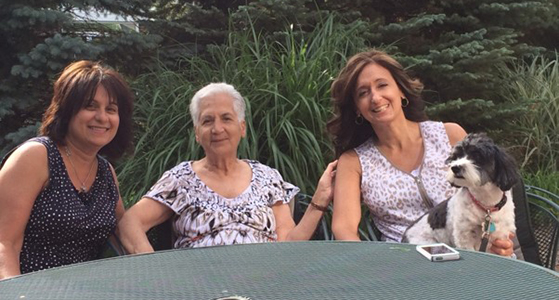

Module: Tips for families and caregivers
Laura Dyas LBSW, LPC, MA
Resources
Rhonda’s Testimonial – Full text version (see the video below)
This is the full text version of Rhonda’s testimonial
Printout PDFFinal Thoughts
There will be obstacles that you will need to overcome. You may be faced with them daily, weekly or monthly. These cannot be avoided. Look at these as challenges and do not fear them.
If one day you are finding it difficult to be a caregiver, know tomorrow is a new day. Go to bed, forgive yourself, and wake up the next day celebrating the fact that you have a new day filled with new possibilities.
Remember to laugh EVERY day! Laughter is so critical to the caregiving process, as odd as that may sound right now. You may ask, “What is possibly funny about sickness, all of this upheaval, and all of the changes my life is facing?” Well, that is the part you will need to search for.
Look for laughter in your routine, your tasks, and your life. Find reasons to smile and things to be thankful for. This healthy and positive attitude will keep your mind and spirit stronger, and in turn you will be a better caregiver.
When you are happy you will feel more energetic, focused and, in control.
Listen to Rhonda’s testimonial as a caregiver.
To read the full version of Rhonda’s testimonial please click here.